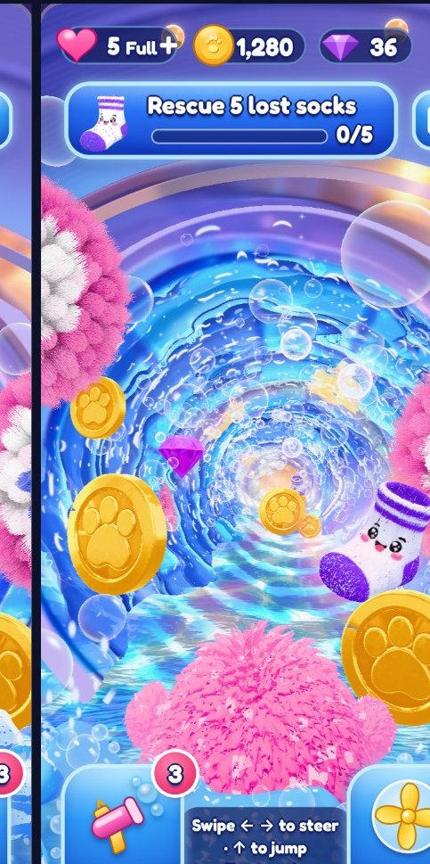

Select full same-moment screenshots to compare geometry and water coverage. Drag the opacity slider to switch between images.

These are authentic captured/reference images, not generated illustrations. Matching screenshots must use the same content frame, game seed, camera and display area. If the images have different HUD widths or phone ratios, crop and align before comparing.